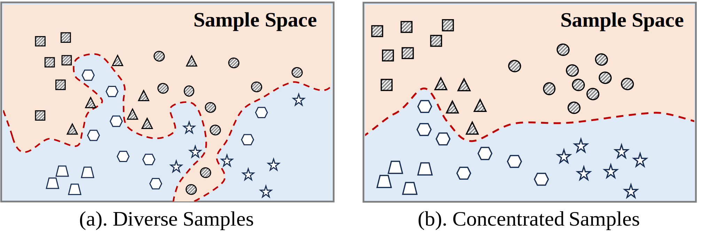
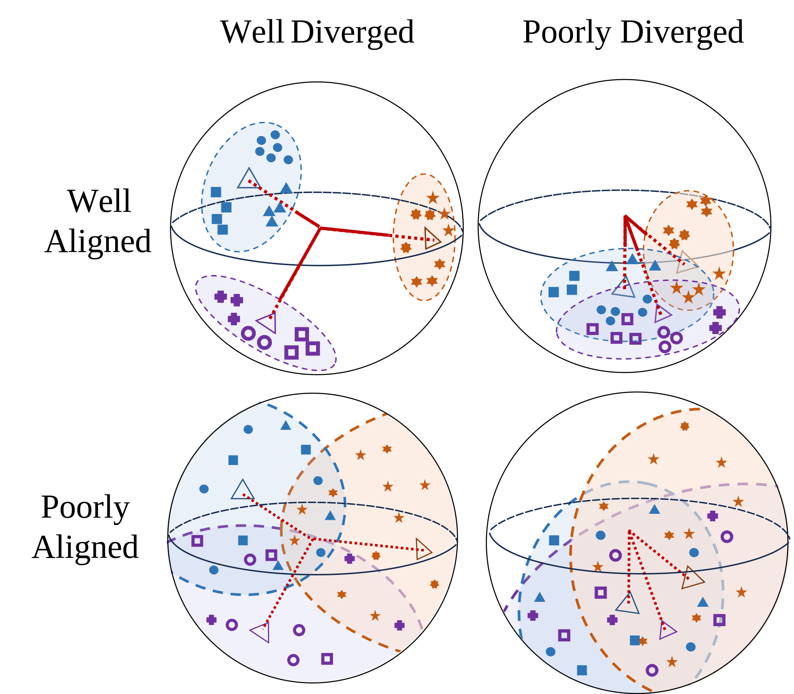
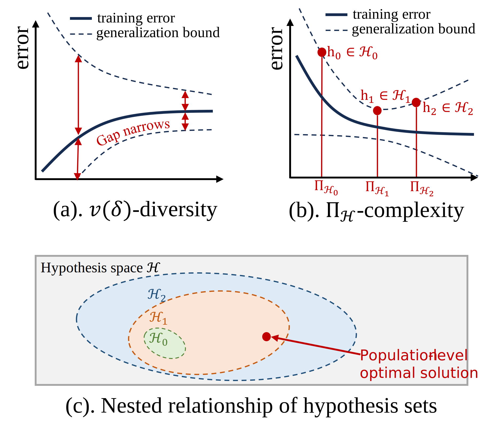

3. Superclasses and Contrastive Learning
We establish connections between superclass learning and contrastive learning, and propose key metrics for analyzing superclass learning performance.
- (Subsection III-B)
Difficulty for Superclass Classification.
We introduce the concept of data diversity to characterize the difficulty of superclass classification: $$ \begin{aligned} v(\delta) = P\left[x \in S_\delta, \forall S_{i,j}, S_{k,l} \subset S_\delta, \frac{dist(S_{i,j}, S_{k,l})}{\|\mu_{i,j} - \mu_{k,l}\|} \leq \delta\right] \end{aligned} $$
A smaller $\delta$ and a larger $v(\delta)$ correspond to higher diversity within subclasses and across the entire superclass, respectively, making classification more challenging.
Figure 2: Illustration of $\delta$ diversity.
- (Subsection III-C)
Theorem 1: Bounds on Model Performance for Diverse
Datasets.
Given an $L$-Lipschitz continuous encoder $f$ and a $v(\delta)$-diverse superclass dataset $D$ with $K$ superclasses each containing $m$ subclasses, if $f$ can distinguish $D$, then: $$ \begin{aligned} \delta \geq \frac{1}{L}, \quad v(\delta) \leq \frac{1}{m}\sqrt{\frac{4B \cdot L \cdot D}{K(K-1)}} \end{aligned} $$
This theorem establishes that for a given model, there is an upper bound on the diversity of superclass datasets it can handle. As the number of superclasses $K$ and subclasses $m$ increases, the threshold for $v(\delta)$ becomes tighter, indicating increased classification difficulty.
- (Subsection III-C)
Metrics for Alignment and Divergence.
We propose two key metrics for evaluating superclass learning:
1. Subclass Alignment: An encoder's ability to map similar samples to similar outputs. We define $\epsilon$-alignment as mapping an entire subclass into an $\epsilon$-ball: $$ \begin{aligned} \text{diam}(f(S_{i,j})) \leq \epsilon \end{aligned} $$ 2. Superclass Divergence: The separation between different superclasses in the feature space, measured by: $$ \begin{aligned} \sigma = \max_{i,j\in[K]} \mu_i^T \mu_j \end{aligned} $$ A good classifier should achieve high subclass alignment (low $R_\epsilon$) and high superclass divergence (low $\sigma$).
Figure 3: Illustration of subclass alignment and superclass divergence. - (Subsection III-C)
Theorem 2: Generalization Bound for Superclass
Learning.
For a classifier $G_f$ with encoder $f$, if the data diversity $v(\delta)$, subclass alignment $R_\epsilon$, and superclass divergence $\sigma$ satisfy: $$ \begin{aligned} aR_\epsilon^2 + b\sigma^2 - cv^2(\delta) \leq C \end{aligned} $$ Then, the expectation of downstream classification error is upper-bounded: $$ \begin{aligned} \text{Err}(G) = \sum_{k=1}^{K} P[G_f(x) \neq k, x \in S_k] \leq 1 - v(\delta) + R_\epsilon \end{aligned} $$
This theorem shows that improving model alignment and increasing data diversity enhances generalization, while superclass divergence is necessary for strong generalization.
- (Subsection III-C)
Theorem 3: Hypothesis Complexity for Superclass
Learning.
For the same superclass dataset $D$, let $H_1$ be the minimal hypothesis set aligning and diverging $D$, and $H_2$ be the minimal hypothesis set distinguishing all subclasses, then: $$ \begin{aligned} H_1 \subset H_2, \quad \Pi_{H_1}(N) \leq \Pi_{H_2}(N) \end{aligned} $$ Where $\Pi_H(N)$ indicates the growth function of hypothesis $H$ and $N$ is the sample size. For a $v(\delta)$-diverse superclass, we acquire $\Pi_{H_2}(N) = O(N^N)$, and $\Pi_{H_1}(N) = O(N^K)$. This theorem indicates that explicitly identifying all subclasses before assigning superclass labels increases model complexity unnecessarily, potentially reducing generalization ability.
Figure 4: Illustration of hypothesis complexity for superclass learning.